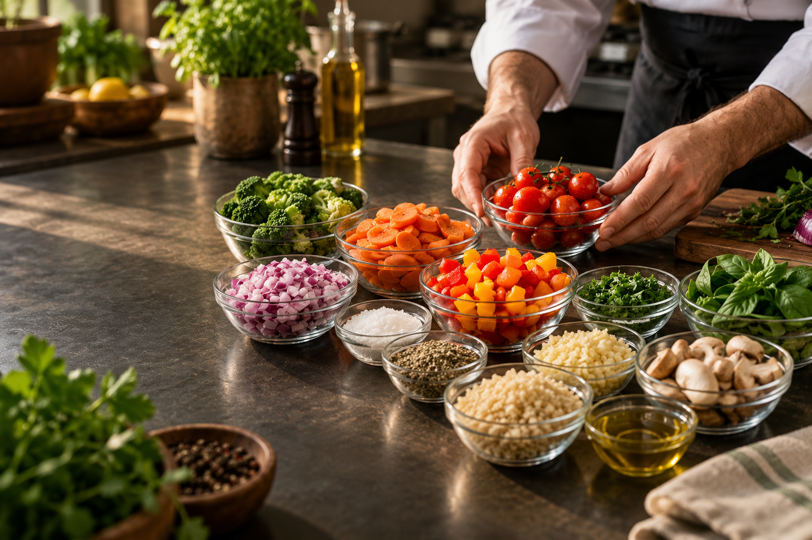
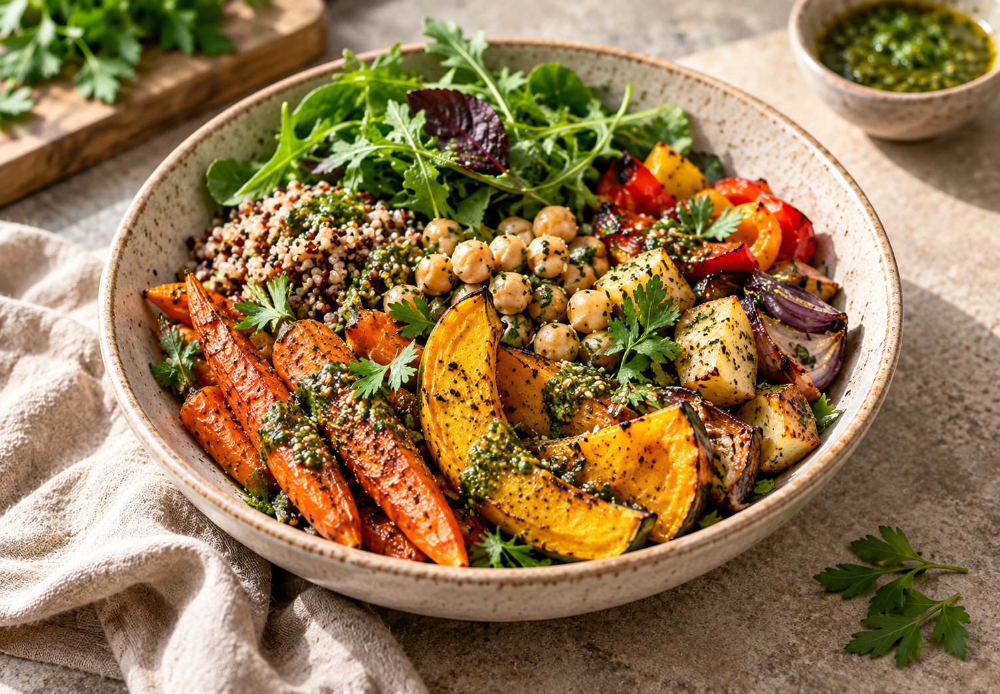
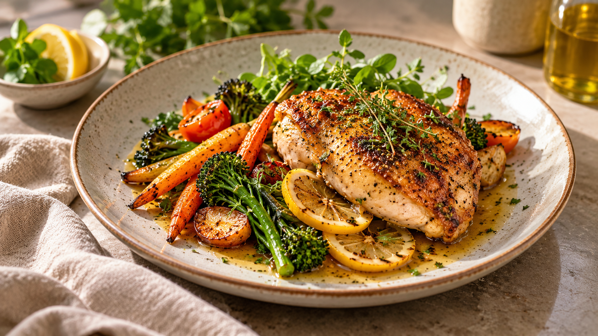
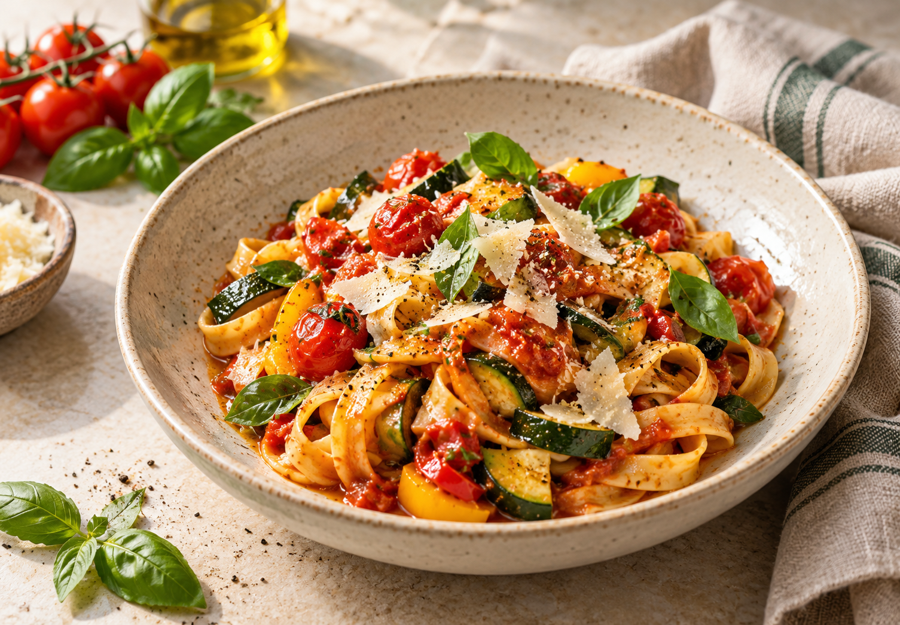

A seasonal kitchen built around ingredients sourced from nearby farms and producers.
A rotating menu shaped by what is fresh now.

Root vegetables · herbs · grain

Free-range chicken · seasonal greens

Fresh produce · house-made sauce